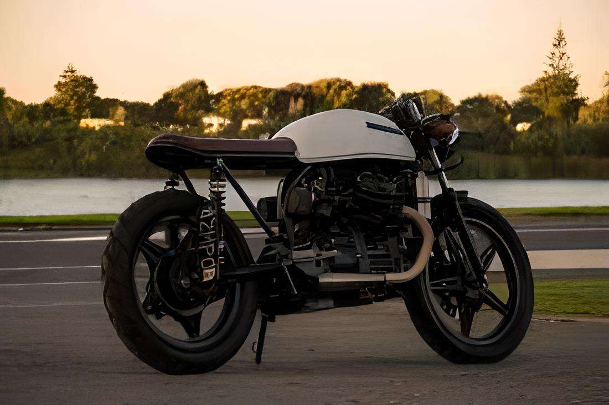

HOW
How do we say when burdog garage started?When does an idea begin? Maybe most people would use the “grand opening” of the shop- but what about before then?How do we say when burdog garage started?When does an idea begin? Maybe most people would use the “grand opening” of the shop- but what about before then?
